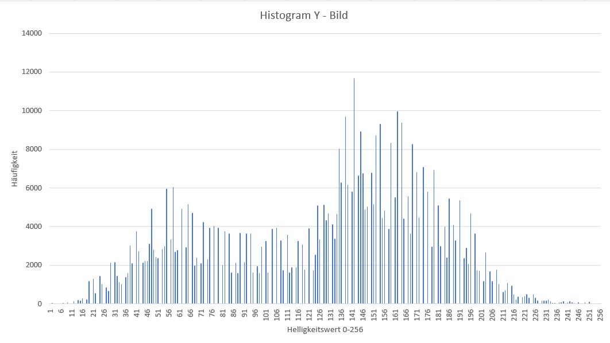

Bescheibung
a. RGB ist der gebräuchlichste Farbraum bei der Aufzeichnung und Darstellung von Bildern. Hier wird das Lichtspektrum in seine Rot-, Grün- und Blauanteile aufgespalten. Der YCbCr Farbraum hingegen besteht aus der Luminanz Y (Helligkeit) und den Farbanteilen (Chrominanz) Cb und Cr. Die RGB Farben eines Bildes lassen sich also in den YCbCr Farbraum transformieren. Für viele Anwendungen, z.B. die Bildkompression, ist es günstig, Helligkeits- und Farbinformation getrennt zu verarbeiten. Nenne den physiologischen Grund dafür!
b. Erstelle aus deinen eigenen Bildern Versionen, die nur jeweils den Rot-, Grün- und Blauanteil zeigen.(Hinweis: Dazu müssen einfach die jeweils anderen Farbwerte auf null gesetzt werden).
c. Nun transformiere deine RGB-Bilder nach YCbCr. Lese dafür jedes Pixel ein und berechne die Helligkeit Y (Luminanzformel!) sowie die Chrominanzen Cb und Cr (Chrominanzformeln!) aus den RGB Werten.
d. Wandle zunächst zur Rekonstruktion deines Bildes die YCbCr Werte zurück in RGB.
Loesung
a) Da das menschliche Auge helligkeitsbezogene Unterschiede besser wahrnimmt als Unterschiede in der Farbe, werden bei Bildkompressionen unter anderem Farbmodelle verwendet, bei denen Helligkeit und Farbe separat betrachtet werden. Dadurch können die einzelnen Parameter gezielter angepasst werden.
b)
for (int y = 0; y < bmp.image.getHeight(); y++) {
for (int x = 0; x < bmp.image.getWidth(); x++) {
// Code for red
PixelColor red = new PixelColor(bmp.image.getRgbPixel(x, y).r, 0, 0);
bmp.image.setRgbPixel(x, y, red);
// Code for green
PixelColor green = new PixelColor(0, bmp.image.getRgbPixel(x, y).g, 0);
bmp.image.setRgbPixel(x, y, green);
// Code for blue
PixelColor blue = new PixelColor(0, 0, bmp.image.getRgbPixel(x, y).b);
bmp.image.setRgbPixel(x, y, blue);
}
}


c)
for(int y = 0; y < bmp.image.getHeight(); y++) {
for (int x = 0; x < bmp.image.getWidth(); x++) {
int r = bmp.image.getRgbPixel(x,y).r;
int g = bmp.image.getRgbPixel(x,y).g;
int b = bmp.image.getRgbPixel(x,y).b;
// get Y
Double yR = (r * 0.299) + 0;
Double yG = (g * 0.587) + 0;
Double yB = (b * 0.114) + 0;
int lumYint = yR.intValue() + yG.intValue() + yB.intValue();
PixelColor lumYintout = new PixelColor(lumYint,lumYint,lumYint);
bmp.image.setRgbPixel(x,y,lumYintout);
// get Cb
Double cbR = (r * -0.169) + 128;
Double cbG = (g * -0.331) + 128;
Double cbB = (b * 0.500) + 128;
PixelColor cb = new PixelColor(cbR.intValue(), cbG.intValue(), cbB.intValue());
bmp.image.setRgbPixel(x,y,cb);
// get Cr
Double crR = (r * 0.500) + 128;
Double crG = (g * -0.419) + 128;
Double crB = (b * -0.081) + 128;
PixelColor cr = new PixelColor(crR.intValue(),crG.intValue(),crB.intValue());
bmp.image.setRgbPixel(x,y,cr);
}
}
d)
for(int y = 0; y < bmp.image.getHeight(); y++) {
for (int x = 0; x < bmp.image.getWidth(); x++) {
int r = bmp.image.getRgbPixel(x,y).r;
int g = bmp.image.getRgbPixel(x,y).g;
int b = bmp.image.getRgbPixel(x,y).b;
// get Y
Double yR = (r * 0.299) + 0;
Double yG = (g * 0.587) + 0;
Double yB = (b * 0.114) + 0;
int lumYint = yR.intValue() + yG.intValue() + yB.intValue();
PixelColor lumYintout = new PixelColor(lumYint,lumYint,lumYint);
bmp.image.setRgbPixel(x,y,lumYintout);
// get Cb
Double cbR = (r * -0.169) + 128;
Double cbG = (g * -0.331) + 128;
Double cbB = (b * 0.500) + 128;
PixelColor cb = new PixelColor(cbR.intValue(), cbG.intValue(), cbB.intValue());
bmp.image.setRgbPixel(x,y,cb);
// get Cr
Double crR = (r * 0.500) + 128;
Double crG = (g * -0.419) + 128;
Double crB = (b * -0.081) + 128;
PixelColor cr = new PixelColor(crR.intValue(),crG.intValue(),crB.intValue());
bmp.image.setRgbPixel(x,y,cr);
Double rRe = (1.0 * yR) + (0 * (cb.r - 128)) + (1.403 * (cr.r - 128));
Double gRe = (1.0 * yG) + ( -0.344 * (cb.g - 128)) + (-0.714*(cr.g - 128));
Double bRe = (1.0 * yB) + (1.773 * (cb.b - 128)) + (0 * (cr.b - 128));
PixelColor rgbRe = new PixelColor(rRe.intValue(),gRe.intValue(),bRe.intValue());
bmp.image.setRgbPixel(x,y,rgbRe);
}
}
Relevanter Teil des codes für die Rückwandlung:
for(...){{
Double rRe = (1.0 * yR) + (0 * (cb.r - 128)) + (1.403 * (cr.r - 128));
Double gRe = (1.0 * yG) + ( -0.344 * (cb.g - 128)) + (-0.714*(cr.g - 128));
Double bRe = (1.0 * yB) + (1.773 * (cb.b - 128)) + (0 * (cr.b - 128));
PixelColor rgbRe = new PixelColor(rRe.intValue(),gRe.intValue(),bRe.intValue());
bmp.image.setRgbPixel(x,y,rgbRe);
}
}
beschreibung
Mithilfe eines Histogramms kann die Verteilung (Häufigkeit) der Helligkeiten eines Bildes dargestellt werden. Erstelle ein Histogramm für das monochrome Detailbild aus Aufgabe 1 (Y - Bild). Lese dafür den Helligkeitswert der Pixel ein und bestimme die Helligkeitshäufigkeiten (Anzahl gleicher Helligkeiten). Diese sollen in eine Textdatei geschrieben und als Histogramm dargestellt werden (z.B. in Excel, Java).
Loesung
FileOutputStream fos = new FileOutputStream("HistogramYx10.0.txt"); OutputStreamWriter osw = new OutputStreamWriter(fos, "US-ascii"); BufferedWriter bw = new BufferedWriter(osw); int[] histogram = new int[256]; for(int i = 0; i < 256; i++){ histogram[i] = 0; } for(int y = 0; y < bmp.image.getHeight(); y++) { for (int x = 0; x < bmp.image.getWidth(); x++) { int r = bmp.image.getRgbPixel(x,y).r; int g = bmp.image.getRgbPixel(x,y).g; int b = bmp.image.getRgbPixel(x,y).b; Double yR = (r * 0.299) + 0; Double yG = (g * 0.587) + 0; Double yB = (b * 0.114) + 0; int lumYint = yR.intValue() + yG.intValue() + yB.intValue(); histogram[lumYint] = histogram[lumYint] + 1; } } for(int i = 0; i < histogram.length; i++){ bw.write(String.valueOf(histogram[i])); bw.newLine(); } bw.close(); osw.close(); fos.close();
HÄufigkeit von Helligkeitsstufen in Y:
beschreibung
a. Berechne die mittlere Helligkeit der monochromen Bilder aus Aufgabe 1 (Y - Bild). Lese dafür den Helligkeitswert der Pixel ein. Die mittlere Helligkeit ist die Summe aller Helligkeitswerte geteilt durch die Anzahl der Bildpunkte. Berechne auch den Kontrast des Bildes, d.h. die Standardabweichung der Helligkeit. b. Verändere das monochrome Bild in der Helligkeit durch Subtrahieren der Werte h=(-20, -40, -60, -80) bzw. Addieren der Werte h=(20, 40, 60, 80). Beachte dabei, dass ihr beim Ergebnis der Pixelwertberechnung im 8-Bit-Bereich bleibt. Berechne die Histogramme des hellsten und dunkelsten Bildes. c. Erhöhe bzw. verringere den Kontrast durch Multiplikation mit den Faktoren k=(0.2, 0.4, 0.8, 1.0) sowie k=(1.5, 2.5, 5.0, 10.0). Was würde bei einer Kontraständerung mit k < 0 passieren (Einfach ausprobieren und Bild speichern!)?
Loesung a)
Code für mittlere Helligkeit: int totalPixelValue = 0; int totalPixel = bmp.image.getHeight() * bmp.image.getWidth(); for(int y = 0; y < bmp.image.getHeight(); y++) { for(int x = 0;x < bmp.image.getWidth(); x++) { totalPixelValue += bmp.image.getRgbPixel(x,y).r; } } int averageY = totalPixelValue/totalPixel; Ergebnis: Mittlere Helligkeit des Gesamtbildes Y = 127.
Code für Standardabweichung: Double formulaPart1 = (1/(Double.valueOf(bmp.image.getWidth()) * Double.valueOf(bmp.image.getHeight()))); Double formulaPart2 = 0.0; for(int y = 0; y < bmp.image.getHeight(); y++) { for(int x = 0;x < bmp.image.getWidth(); x++) { int yintensityMinusAverage = bmp.image.getRgbPixel(x,y).r - 127; //127 = mittlere Helligkeit siehe oben Double yIntensityMinusAverageSquared = Math.pow(yintensityMinusAverage,2); formulaPart2 += yIntensityMinusAverageSquared; } } Double variance = formulaPart1 * formulaPart2; Double standardDeviation = Math.sqrt(variance); System.out.println(standardDeviation); Ergebnis: Standardabweichung(Kontrast) des Bildes Y = 50.06
Loesung b)
Code: int h = -80; for(int y = 0; y < bmp.image.getHeight(); y++) { for(int x = 0;x < bmp.image.getWidth(); x++) { int rNew = bmp.image.getRgbPixel(x,y).r + h; int gNew = bmp.image.getRgbPixel(x,y).g + h; int bNew = bmp.image.getRgbPixel(x,y).b + h; if((rNew <= 0 )){ //Falls Wert unter 0 dann auf 0 setzen um in 8 Bit zu bleiben rNew = 0; gNew = 0; bNew = 0; } if((rNew >= 255 )){ //Falls Wert über 255 dann auf 255 setzen um in 8 Bit zu bleiben rNew = 255; gNew = 255; bNew = 255; } PixelColor pcr = new PixelColor(rNew,gNew,bNew); bmp.image.setRgbPixel(x,y,pcr); } }
dunkelstes bild
histogram
hellstes bild
histogram
Pixel mit Helligkeit unter 0 wurden mit 0 ersetzt und Pixel mit Helligkeit über 255 wurden mit 255 ersetzt (Um im 8 Bit bereich zu bleiben). Die werte für die Histogramme dieser Aufgabe wurden wieder mit einer durch Java generierten Textdatei erstellt, siehe Code aus Aufgabe2.
Loesung c)
Code: Double k = -0.5; // k = Wert mit dem die Helligkeit multipliziert wird. for(int y = 0; y < bmp.image.getHeight(); y++) { for(int x = 0;x < bmp.image.getWidth(); x++) { Double rNew = bmp.image.getRgbPixel(x,y).r * k; Double gNew = bmp.image.getRgbPixel(x,y).g * k; Double bNew = bmp.image.getRgbPixel(x,y).b * k; if((rNew <= 0 )){ rNew = 0.0; gNew = 0.0; bNew = 0.0; } if((rNew >= 255 )){ rNew = 255.0; gNew = 255.0; bNew = 255.0; } PixelColor pcr = new PixelColor(rNew.intValue(),gNew.intValue(),bNew.intValue()); bmp.image.setRgbPixel(x,y,pcr); } }
kontrast ärmstes bild
histogram
kontrastreichstes bild
histogram
Pixel mit Helligkeit unter 0 wurden mit 0 ersetzt und Pixel mit Helligkeit über 255 wurden mit 255 ersetzt (Um im 8 Bit bereich zu bleiben). Bei dem Bild mit der Multiplikation von k = 10 kann man sehen dass die Helligkeit aller Pixel so hoch ist, das kaum noch etwas zu erkennen ist. Bei dem Bild mit der Muultiplkation von k = 0.2 also dem Bild mit dem geringsten Kontrast ist noch mehr zu erkennen, aber auch alle Pixel dieses bildes sind dunkler geworden. Es ist kaum noch ein Kontrast zu erkennen. Wenn k < 0 ist, ändert sich das Vorzeichen und alle Pixel werden <= 0 daraus folgt, das sich die Pixel nicht mehr im 8 Bit bereich befinden, ändert man alle Pixel unter 0, zu 0, resultiert dies in einem komplett Schwarzen Bild.
Unterschied zwischen dem Histogramm der Helligkeitsveränderung und dem Histogramm der Kontraständerung: Es ist zu erkennen, dass sich bei der Kontraständerung im vergleich zur Helligkeitsänderung das Verhältnis der Helligkeitswerte der Pixel zueinander ändert. Bei der Helligkeitsänderung verschiebt sich die Kruve aus dem Histogramm aus Aufgabe2 nur, bei der Kontraständerung hat eine Multiplikation mit 0.2 bspw einen größeren einfluss auf Pixel mit hohen Helligkeitswert als auf Pixel mit geringem Helligkeitswert.